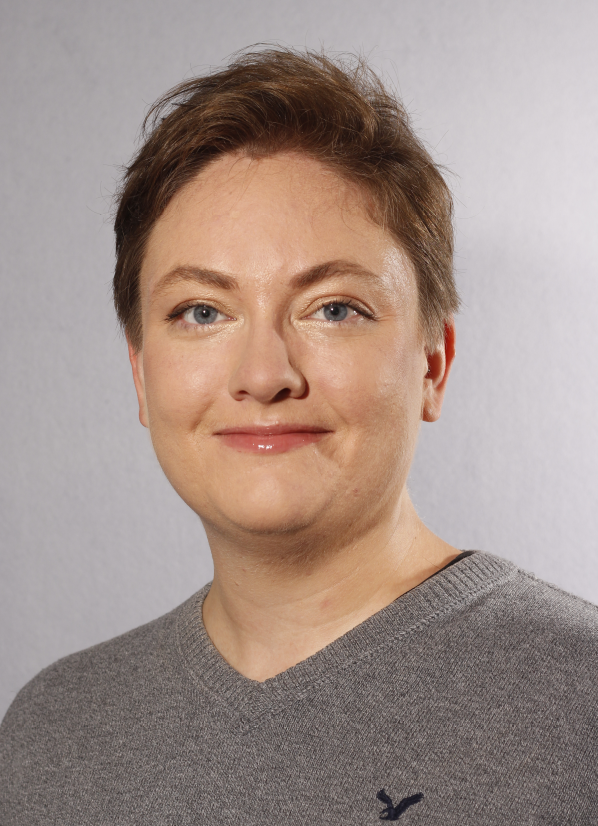

Lebenslauf
Personliche Daten

Name Ebensteiner
Vorname Katharine
Adresse Kalchbuhlstrasse 44, 8036 Zurich
Mobil 076 349 69 64
E-Mail kate.ebensteiner@gmail.com
Geburtsdatum 29. Oktober 1981
Nationalitat USA
Einreise Schweiz 2019
Aufenthaltsstatus B
Zivilstand eingetragene Partnerschaft
Personliche Kompetenzen
Meine Arbeitsweise ist detailorientiert und sehr zielstrebig; ich mag es, an etwas zu forschen und gewonnene Daten auszuwerten. Ich verfüge über ein logisches sowie auch kreatives Denken. Selbstständiges Arbeiten ist mir wichtig, ich kann mich aber auch wunderbar in einem Team integrieren. Zu meinen Stärken zähle ich meine Empathie, auch habe die Fähigkeit gut zuzuhören und kritisch zu denken.
Berufliche Erfahrungen
2019 Akklimatisierung Schweiz und Spracherweb Deutsch.
07.2015 - 09.2019 Geologische Umwelt-Technikerin, Associated Earth Sciences, Inc. (AESI), USA.
07.2008 - 03.2015 Geo- und Umwelttechnikerin, exp Services Inc, Kanada.
05.2005 - 06.2008 Geologische Umwelttechnikerin, Associated Earth Sciences, Inc. (AESI), USA.
2004 - 2005 Auslandjahr in Japan.
Bildungsweg
2000 - 2005 Bachelor of Arts, Japanese Foreign Language major, Fine arts in Drawing minor (USA und Japan).
1987 – 2000 Grundschule und Gymnasium mit Matura, USA.
Sprachen
Deutsch - Gute Grundkenntnise in Wort und Schrift.
Englisch - Muttersprache.
INC-Kenntnise
Ms Office Paket / Word, Excel und PowerPoint / sehr gute Kenntnisse.
Grafikprogramme / Adobe Photoshop CS5, Adobe Illustrator / gute Kenntnisse.
CAD-AutoCAD / CAD 2012,Civil 3D 2014 / gute Kenntnisse.